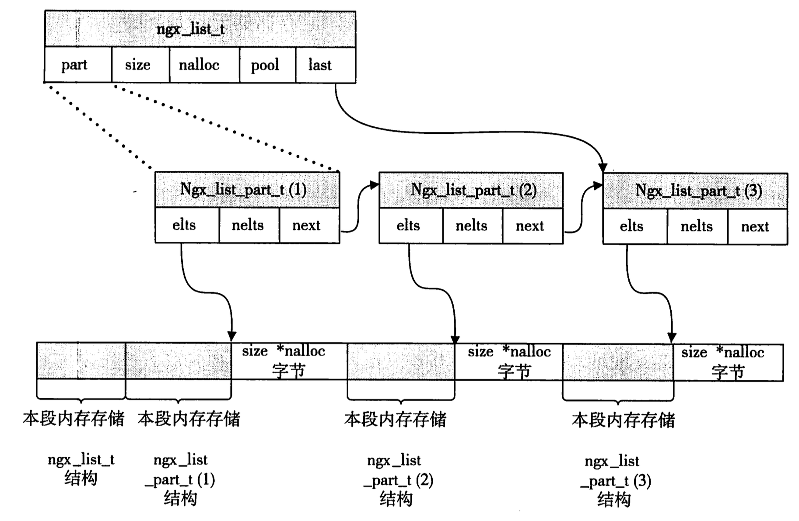
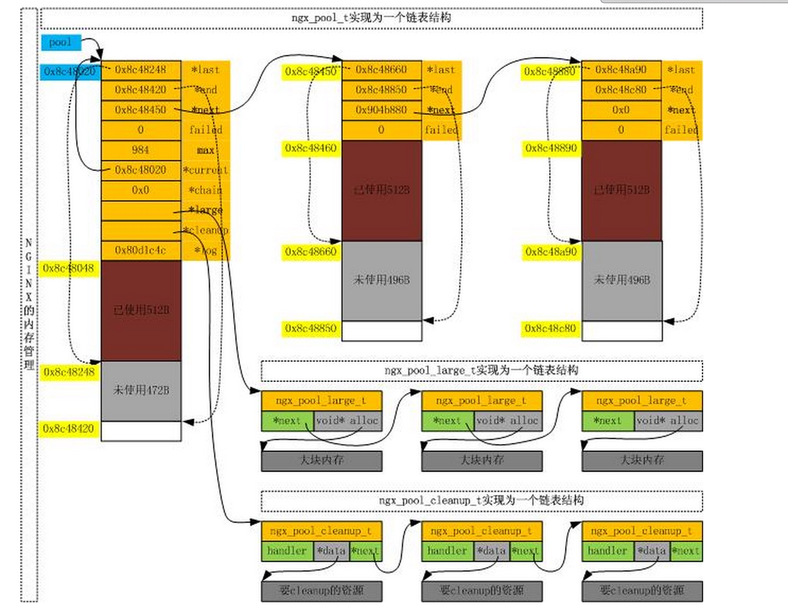

struct¶
ngx_str_t¶
struct define:
typedef struct {
size_t len;
u_char *data;
} ngx_str_t;
nginx string is not like normal C-str. Which is not end with ‘\0’. It’s controlled by len. So it can share memory sources bewteen sereval string objects.
ngx_list_t¶
struct define:
typedef struct ngx_list_part_s ngx_list_part_t;
struct ngx_list_part_s {
void *elts;
ngx_uint_t nelts;
ngx_list_part_t *next;
};
typedef struct {
ngx_list_part_t *last;
ngx_list_part_t part;
size_t size;
ngx_uint_t nalloc;
ngx_pool_t *pool; // memory pool object
} ngx_list_t;
The node of nginx list is array. It’s high performance for index item in it. The memory calloc picture like
ngx_table_elt_t¶
struct defined:
typedef struct {
ngx_uint_t hash;
ngx_str_t key;
ngx_str_t value;
u_char *lowcase_key;
} ngx_table_elt_t;
This struct is designed for http headers. Because header key is not case sensitive.
ngx_module_t¶
struct defined:
struct ngx_module_s {
// this value represent the order of this moudle in one type of modules.
// the value is important because it affect how proccess one request with much modules
ngx_uint_t ctx_index;
// like up, but it's all modules
ngx_uint_t index;
// remind and unused
ngx_uint_t spare0;
ngx_uint_t spare1;
ngx_uint_t spare2;
ngx_uint_t spare3;
// version of this module (it always 1)
ngx_uint_t version;
// this value assign to context of this type of module
// Because the different of each type module is great. So the content this value is different
void *ctx;
// this directive process config of nginx about this module
ngx_command_t *commands;
// type of this module. which have 5 value:
// NGX_HTTP_MODULE
// NGX_CORE_MODULE
// NGX_CONF_MODULE
// NGX_EVENT_MODULE
// NGX_MAIL_MODULE
ngx_uint_t type;
// method point. it will be called by nginx in different time
// unused. always NULL
ngx_int_t (*init_master)(ngx_log_t *log);
// it will be called in init of every module.(It will be called before fork worker process)
ngx_int_t (*init_module)(ngx_cycle_t *cycle);
// it will be called in init of every worker process.
ngx_int_t (*init_process)(ngx_cycle_t *cycle);
// unused. always NULL. (because nginx don't support thread model)
ngx_int_t (*init_thread)(ngx_cycle_t *cycle);
// like up
void (*exit_thread)(ngx_cycle_t *cycle);
// it will be called before worker process exit
void (*exit_process)(ngx_cycle_t *cycle);
// it will be called before master process exit
void (*exit_master)(ngx_cycle_t *cycle);
// remind & unused
uintptr_t spare_hook0;
uintptr_t spare_hook1;
uintptr_t spare_hook2;
uintptr_t spare_hook3;
uintptr_t spare_hook4;
uintptr_t spare_hook5;
uintptr_t spare_hook6;
uintptr_t spare_hook7;
};
ngx_log_t¶
struct define:
struct ngx_log_s {
ngx_uint_t log_level;
ngx_open_file_t *file;
ngx_atomic_uint_t connection;
ngx_log_handler_pt handler;
void *data;
/*
* we declare "action" as "char *" because the actions are usually
* the static strings and in the "u_char *" case we have to override
* their types all the time
*/
char *action;
ngx_log_t *next;
};
ngx_pool_t¶
struct define:
struct ngx_pool_cleanup_s {
ngx_pool_cleanup_pt handler;
void *data;
ngx_pool_cleanup_t *next;
};
typedef struct ngx_pool_large_s ngx_pool_large_t;
struct ngx_pool_large_s {
ngx_pool_large_t *next;
void *alloc;
};
typedef struct {
u_char *last;
u_char *end;
ngx_pool_t *next;
ngx_uint_t failed;
} ngx_pool_data_t;
struct ngx_pool_s {
ngx_pool_data_t d;
size_t max;
ngx_pool_t *current;
ngx_chain_t *chain;
ngx_pool_large_t *large;
ngx_pool_cleanup_t *cleanup;
ngx_log_t *log;
};
The relationship within them like that:
它的逻辑:
- 没有局部free的方法，一般使用方式都是在一个pool上一点一点palloc, 等连接关闭时，对整个pool进行destory
- 开辟内存小于max的时候，在pool->d这个内存链表里开辟(不停开辟block)
- 开辟内存大于max的时候，在pool->large 这个内存链表上开辟(同上)
- pool->cleanup 是内存池提供的回调函数，free的时候会依次调用，一般不需要处理它
- pool->chain 目前还没使用
见 例子
ngx_buf_t¶
TODO
ngx_chain_t¶
TODO